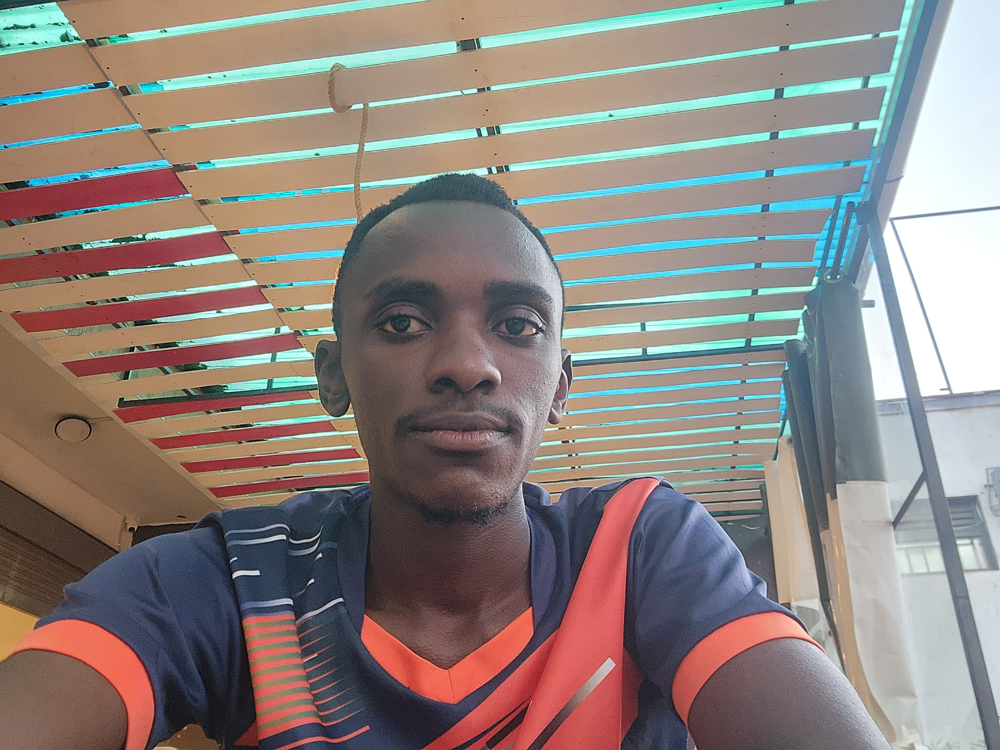

Meet Our Team

Jane Doe
Executive Director

John Smith
Head of Research

Mary Johnson
Community Outreach Lead
×

Learn more about our mission, vision, and the people behind WHRS.
WellHorizon Research Services (WHRS) is a non-profit organization dedicated to equipping communities with knowledge and wellness through research, training, wellness programs, and outreach.
To promote wellness and empower communities through innovative research and capacity building.
A healthier and more informed society where research drives sustainable community impact.
Integrity, Innovation, Collaboration, and Community Empowerment.
WHRS was founded by a team of passionate researchers and wellness advocates with the goal of bridging the gap between academic research and real-world community solutions. Through years of experience in healthcare and research, our team saw the need for an organization that not only supports researchers but also translates findings into programs that directly benefit communities.
Executive Director
Head of Research
Community Outreach Lead
We work hand-in-hand with academic institutions, NGOs, and community organizations.